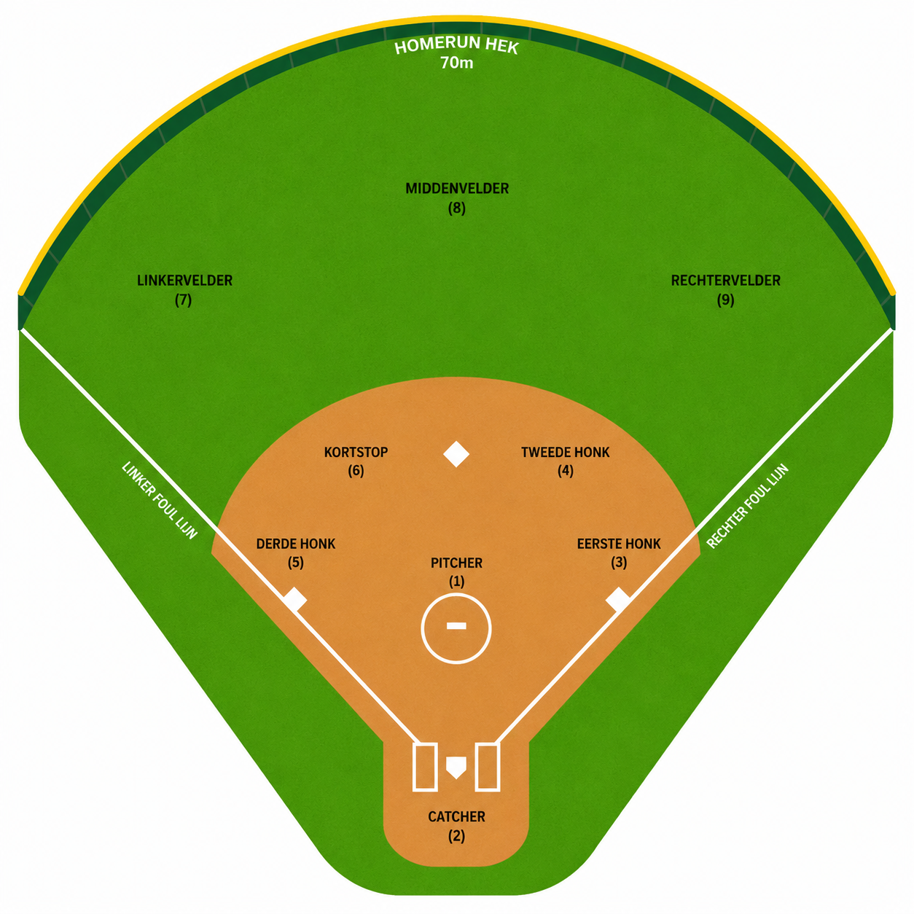

Laatste wedstrijd
-
-
-Pitches
-Strike %
-Strikeouts
-Walks
Voer het wachtwoord in om het dashboard te openen.
Analytics Dashboard
Hot streak wordt berekend uit de laatste wedstrijden.
Wordt geladen...
Wordt geladen...
Wordt geladen...
Deze functie bouwen we in de volgende stap uit.
Nog geen speed-training opgeslagen.
| Datum | Tegenstander | P | S | B | IP | FPS | S/B | BB | K | ER | UER | RA | ERA | FPS % |
|---|---|---|---|---|---|---|---|---|---|---|---|---|---|---|
| Kies een pitcher. | ||||||||||||||
Density heatmap van alle pitches per pitcher.


Kies een tegenstander en slagvrouw.
| Nr | Datum | Tegenstander | Pitcher | Pitch | Resultaat | Zone |
|---|---|---|---|---|---|---|
| Kies een tegenstander en slagvrouw. | ||||||
Tik op een wedstrijd voor de recap per pitcher.
Wedstrijden worden geladen...
Open een game die nog niet met Stop/reset is afgesloten.
Teams worden opgeslagen in databasepagina: Tegenstanders
Vul 1 t/m 9 als actieve slaglijst in. 10 t/m 16 zijn bench/wissels.
#00 · Line-up 1
Bij HIT of Veld uit wordt hier zichtbaar waar de bal kwam.